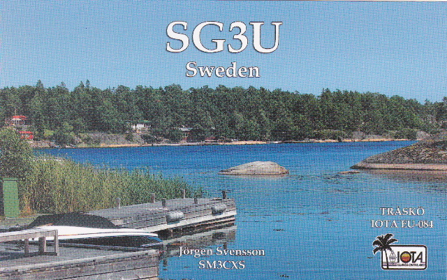

Flash ! DX


 |
|
|
|
 |
|
|
[Back Issues May.2013]
TIME:UTC(JST-09:00)
Report from JA1RJU(PM95sq)
31.May.2013(15:00c)
(JR6YAG/b 03:00- 50.037 CW Beacon Okinawa)
KH9/WA2YUN/B 04:55- 50.014 CW Beacon
KG6DX 05:30 50.110 CW CQ
KG6DX 05:40 50.110 SSB CQ
Report from JA1RJU(PM95sq)
30.May.2013(15:00c)
(JR6YAG/b 09:00- 50.037 CW Beacon Okinawa)
BV2DQ 09:08 50.110 CW/SSB CQ
VK4RHT/b 09:10- 50.281 CW Beacon
VK4RTL/b 09:10- 50.282 CW Beacon
VK4WTN 09:17 50.100 CW
VK8MS 12:50 50.110 CW CQ
Report from JA1RJU(PM95sq)
29.May.2013(15:00b)
Report from JA1RJU(PM95sq)
28.May.2013(15:00b)
(JR6YAG/b 05:30- 50.037 CW Beacon Okinawa)
Report from JA1RJU(PM95sq)
27.May.2013(15:00b)
Report from JA1RJU(PM95sq)
26.May.2013(15:00b)
BV0VQP 02:55 50.115 SSB RS59(YL-OP & CQ-OM!!)
(JA6YBR/b 03:15- 50.017 CW Beacon Miyazaki)
Report from JA1RJU(PM95sq)
25.May.2013(15:00b)
(JA6YBR/b 08:00- 50.017 CW Beacon Miyazaki)
JD1BHA 08:00- 50.205 SSB (Hahajima)
Report from JA1RJU(PM95sq)
24.May.2013(15:00b)
VK4RHT/b 09:25- 50.281 CW Beacon
VK6RSX/b 09:25- 50.304 CW Beacon
Report from JA1RJU(PM95sq)
23.May.2013(15:00c)
(JR6YAG/b 02:00- 50.037 CW Beacon Okinawa)
HL4EJT 03:15 50.110 SSB
Report from JA1RJU(PM95sq)
22.May.2013(15:00b)
DS3BNU/2 02:05 50.110 SSB
(JR6YAG/b 02:05- 50.037 CW Beacon Okinawa)
Report from JA1RJU(PM95sq)
21.May.2013(15:00c)
(JA6YBR/b 08:00- 50.017 CW Beacon Miyazaki)
(JR6YAG/b 08:15- 50.037 CW Beacon Okinawa)
9M4SIX/b 08:20- 50.005 CW Beacon
DU1EV/b 08:55- 50.008 CW Beacon
JI1FGX/DU9 09:00 50.110 SSB CQ
UR5FA/MM 09:10 50.110 CW CQ GL=PL19
JD1BHA 09:31 50.205 CW CQ RST599 (Hahajima)
Report from JA1RJU(PM95sq)
20.May.2013(15:00b)
VK6RSX/b 07:15- 50.304 CW Beacon
Report from JA1RJU(PM95sq)
19.May.2013(15:00b)
(S59A 09:10 50081.5 CW RST559 QSO=JE6AZU-#)
|
◎ 5月始めの連休頃から、国内Esの伝搬も本格的になってきた。BVやHL/JD1など近場のDXの入感で賑わい始め、EsのマルチホップのDX入感に対する期待が増してきた。 太陽活動も一時的に活発になり、5/13-15日に掛けて特に巨大な「太陽フレア」が4回発生したと17日に「情報通信研究機関」から発表された。 この"巨大フレア"の影響で、今後2週間程度は漁業、航空無線、GPSなどに障害が出る恐れがあるとして、関係期間に注意を呼びかけた。 NASAの発表している黒点数値も5/16日には200を超える値を示した。 この黒点群からの"太陽フレア"の影響で地球の磁場が乱れ、通信が途切れるなどの障害が起こりうるといわれている。 新たなフレアの発生が無ければ、太陽の自転と共に黒点群は太陽の裏側に移動して行くが、今回の爆発による影響は明日がピークと予想されている。 太陽黒点数の"増加"は、6mバンドの伝搬に大きな影響を与えるといわれているが、今回の様な一時的な太陽の爆発によるものは、直ぐにコンデションの上昇に影響を与えるものではない。 昨日の午後、JA8からリポートされたK6FV/bの入感に続き、今日は西日本(JA6)とS59A(Slovenia)とのQSOがリポートされていたが、本格的な"マルチホップ"の入感にはまだ早いかも。昨年の本格的な入感は5月下旬だった。 |
Report from JA1RJU(PM95sq)
18.May.2013(15:00d)
BV3CE 02:50 50.115 SSB
BU2AV 02:55 50.098 CW @ RST599
BV2B/7 03:20 50.105 CW
BV4VU 03:30 50.128 SSB
UR5FA/MM 03:40 50.115 SSB GL=PL26
VK6RSX/b 07:30- 50.304 CW Beacon
JD1BHA 07:35 50.220 SSB Hahajima
BV2B/7 08:20 50.115 SSB CQ
UR5FA/MM 09:03 50.110 CW/SSB CQ
VK4EK 09:07 50.110 SSB CQ
VK4RHT/b 09:08- 50.281 CW Beacon
VK4RTL/b 09:08- 50.282 CW Beacon
VK6RSX/b 09:08- 50.304 CW Beacon
VK4WTN 09:25 50.110 CW CQ
Report from JA1RJU(PM95sq)
17.May.2013(15:00b)
Report from JA1RJU(PM95sq)
16.May.2013(15:00b)
Report from JA1RJU(PM95sq)
15.May.2013(15:00c)
DU1EV/B 02:55- 50.008 CW Beacon
BX2ACQ 09:29 50.110 SSB CQ
(JR6YAG/b 09:30- 50.037 CW Beacon Okinawa)
Report from JA1RJU(PM95sq)
14.May.2013(15:00c)
DU1EV/B 05:10- 50.008 CW Beacon
VK4RHT/b 09:25- 50.281 CW Beacon
VK4RTL/b 09:25- 50.282 CW Beacon
VK6RSX/b 09:25- 50.304 CW Beacon
Report from JA1RJU(PM95sq)
13.May.2013(15:00c)
BX2AB 01:40 50.110 SSB/CW CQ
BX2AB 01:56 50.105 CW CQ CQ
UR5FA/MM 09:20 50.110 CW CQ
(JR6YAG/b 09:25- 50.0375 CW Beacon Okinawa)
(JA6YBR/b 09:25- 50.017 CW Beacon Miyazaki)
VK6RSX/b 09:35- 50.304 CW Beacon RST599
Report from JA1RJU(PM95sq)
12.May.2013(15:00b)
Report from JA1RJU(PM95sq)
11.May.2013(15:00d)
JD1BHA 02:00 50.205 SSB Hahajima RS57
KH9/WA2YUN/B 06:00- 50.014 CW Beacon
VK4RHT/b 08:00- 50.281 CW Beacon
UR5FA/MM 09:34 50.111 CW CQ GL=PJ87
VK4RHT/b 13:00- 50.281 CW Beacon
Report from JA1RJU(PM95sq)
10.May.2013(15:00d)
VK4RTL/b 09:15- 50.282 CW Beacon
VK4WDM 09:20 50.110 SSB CQ RS59
VK4RHT/b 12:20- 50.281 CW Beacon
VK8VF/b 12:20- 50.310 CW Beacon
VK6RSX/b 14:59- 50.304 CW Beacon
Report from JA1RJU(PM95sq)
09.May.2013(15:00c)
VK6RSX/b 07:20- 50.304 CW Beacon
VK4WTN 07:58 50.110 CW CQ
VK4RTL/b 08:00- 50.282 CW Beacon
VK4RHT/b 08:45- 50.281 CW Beacon
Report from JA1RJU(PM95sq)
08.May.2013(15:00d)
VK6RSX/b 07:00- 50.304 CW Beacon
FK8SIX/b 08:00- 50.080 CW Beacon(FSK)
VK4RHT/b 08:45- 50.281 CW Beacon
VK4RTL/b 08:45- 50.282 CW Beacon
VK6RSX/b 08:45- 50.304 CW Beacon
Report from JA1RJU(PM95sq)
07.May.2013(15:00d)
VK6RSX/b 07:43- 50.304 CW Beacon
FK8CP 08:05 50.110 CW CQ
DU7/PA0HIP 08:35 50.110 CW CQ
FK8CP 08:42 50.110 CW CQ
VK4RTL/b 08:42- 50.282 CW Beacon
JD1BHA 08:45 50.190 CW
VK4RHT/b 09:00- 50.281 CW Beacon
VK4RTL/b 09:00- 50.282 CW Beacon
VK6RSX/b 09:00- 50.304 CW Beacon
JD1BHA 09:08 50.197 CW/SSB
DU7/PA0HIP 09:09 50.197 CW Calling JD1
DU1EV/B 09:09- 50.008 CW Beacon
HL4CHH 09:14 50.105 CW
VK6OC 09:21 50.110 SSB CQ
DU1IST 09:35 50.150 CW RST599
DU1IST 09:38 50.150 CW @ QSL via JA1HGY
VK6OC 09:42 50.110 SSB CQ
FK8CP 09:53 50.110 CW CQ
BA4SI 14:22 50.110 CW
Report from JA1RJU(PM95sq)
06.May.2013(15:00d)
VK6RSX/b 07:05- 50.304 CW Beacon
VK4RHT/b 08:30- 50.281 CW Beacon
VK4RTL/b 08:30- 50.282 CW Beacon
HL4CHH 09:07 50.110 CW CQ RST599
VK4RHT/b 09:30- 50.281 CW Beacon RST599
Report from JA1RJU(PM95sq)
05.May.2013(15:00d)
KG6DX 07:55 50.105 CW
VK6RSX/b 08:45- 50.304 CW Beacon
JD1BHA 08:53 50.190 CW @ OP/GOTO Hahajima-Ogasawara Is.
JD1BHA 08:58 50.190 SSB/CW
9N7SZ 09:28 50.105 CW QRT
VK6RSX/b 09:45- 50.304 CW Beacon
VK8VF/b 09:45- 50.310 CW Beacon
VK6RSX/b 13:00- 50.304 CW Beacon
DU7/PA0HIP 13:35 50.110 CW CQ
Report from JA1RJU(PM95sq)
04.May.2013(15:00b)
VK4WTN 09:13 50.115 CW
VK4RHT/b 09:14- 50.281 CW Beacon
VK4RTL/b 09:14- 50.282 CW Beacon
VK6RSX/b 09:14- 50.304 CW Beacon
Report from JA1RJU(PM95sq)
03.May.2013(15:00d)
VK4RTL/b 05:44- 50.282 CW Beacon
BX2AB 05:49 50.110 SSB CQ
BX2AB 06:00 50.110 CW CQ
V6S 06:23 50.115 SSB OP.JA3AZC(QSL Home QTH)
V6S 06:42 50.115 SSB @ UP5 RS59+
FK8CP 07:10 50.110 CW CQ
VK6RSX/b 07:55- 50.304 CW Beacon
VK6OC 08:55 50.110 SSB
VK4BLK 09:09 50.110 CW
VK4RHT/b 09:30- 50.281 CW Beacon
VK4RTL/b 09:30- 50.282 CW Beacon
VK6RSX/b 09:30- 50.304 CW Beacon
VK6OC 09:35 50.110 SSB
UR5FA/MM 09:35 50.110 CW CQ GL=QH66
Report from JA1RJU(PM95sq)
02.May.2013(15:00d)
V6H 07:10 50.110.5 CW OP.JH3QFL(QSL Home QTH)
V6H 07:26 50.110.5 CW @ RST599 UP6
VK4RTL/b 08:10- 50.282 CW Beacon
VK6RSX/b 08:10- 50.304 CW Beacon
V6H 08:10 50.110.5 CW still RST599
9M6XRO 08:11 50.090 RTTY
VK4RHT/b 09:00- 50.281 CW Beacon
VK4RTL/b 09:00- 50.282 CW Beacon
VK6RSX/b 09:00- 50.304 CW Beacon
DU1EV/B 09:00- 50.008 CW Beacon
VK6AA 09:08 50.101 CW RST599
DU7/PA0HIP 09:22 50.107 CW CQ EU/ME
9M2TO 09:25 50.120 CW
9W6ZUL 09:31 50.125 SSB CQ
9W6ZUL 09:39 50.125 SSB @ RS55/55
9M6ZAE 09:45 50.107 CW
Report from JA1RJU(PM95sq)
01.May.2013(15:00d)
FK8CP 06:08 50.110 CW CQ
UR5FA/MM 06:40 50.1105 CW/SSB CQ GL=QG69
VK4EK 06:49 50.110 SSB CQ
VK4BLK 06:53 50.105/110 CW CQ
FK8SIX/b 07:50- 50.080 CW Beacon
FK8CP 07:50 50.110 CW CQ CQ CQ
VK6RSX/b 09:05- 50.304 CW Beacon
FK8CP 09:05 50.110 CW CQ CQ
5W1SA 09:35 50.115 CW
VK4WTN 09:45 50.105 CW CQ
VK6OC 09:47 50.110 SSB CQ